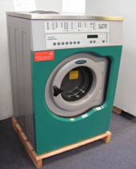
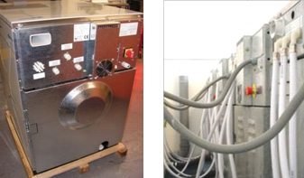
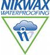

We have been supplying commercial laundry equipment for many years. Horse rugs & pet blankets can be very demanding especially in the winter months, due to the high demand of telephone enquiries we have compiled a few frequent questions before you make your purchase.
A. Horse rugs and pet blankets as you well know - come in all shapes and sizes, commercial laundry machines are sized in kilogram’s sizes starting from 5kg to 50kg. To make sure you order the right machine for your requirement it’s best to weigh your products first, the most popular size for vets and small animal bedding would be a 7kg to 10kg and for horse rugs a 10kg to 23kg drum load size.
(Typical 10kg load commercial washing machine reconditioned)A. There are many commercial washing machine manufactures and we would recommend some of the brands like – Ipso washing machines – Primus washing machines – Electrolux washing machines – ADC dryers– Huebsch dryers –Warwick dryers These have been around in the UK for many years and you will find that most service agents will be familiar with these makes.
A. 3-phase (415volts) is most definitely a more efficient way of operating especially if temperature washes are been used, 3-phase is generally only found in commercial buildings and can be very expensive to have installed, most newer laundry machines now operate via a inverter drive system which enables the machine to be down rated to a 1-phase unit 240volts (ideally a 45amp switch) so yes we can convert most commercial washing machines to suit your electrical requirement.
A. The best location for your new commercial washing machine and dryer is a dry area with a good solid concrete floor , this will depend on the machine you select standard spin or high spin models, check with the machines installation instructions first as some machines can be located on a wooden floors.
Standard spin machines need bolting down to at least 300mm of concrete foundations via x 4/6 M16mm fixings.
High spin & soft mount machines can be totally free standing (but still ask as machines do vary)
You should allow a 400mm service gap at the rear of the machine (this is for service purposes) I know this is not always available and it’s not a show stopper (remember if you cannot leave a service gap at the rear of the machine you may need to unbolt it if you’re ever requiring service work)
Water connections – good pressure of hot & cold is ideal but cold supply only will do, however this will extend your cycle times on temperature washes as the machine will be heating form cold.
Drainage- most machines will be fitted with a gravity drain outlet and must be positioned higher than the main drain, this can be done via a steel floor mounting plinth, and the drain should be fitted with a trap (removable for cleaning purposes)
Electrical, again this will vary with the type of machine you select and your available power.
3-phase 415volts - machines (16amp per phase)
1-phase 240volts machines - (45amp)
1-phase 240volts machines - (32amp)
Boiler fed machines (16amp – 1-phase 240volts)
A. New machines are good for those with higher budgets but most customers that I talk to about horse rug cleaning the first thing they tend to say is “I don’t care what it looks like as long as it’s reliable”. One thing in this industry that always makes me smile are those suppliers that don’t sell reconditioned machines they always say don’t buy second-hand!, However if you ask them how long there new machine would last that there selling 9 out of 10 suppliers will say 10 to 15yrs+, so in my opinion if you buy a used machine that’s around 5 yrs old it should still be good for another 10yrs? (Do you not agree?) One thing is for sure, the good old saying “they don’t make things like they used to” is sadly so true old machines are built much sturdier than new machines, and that’s a fact. We have been reconditioning commercial laundry equipment for many years, and we feel very confident in our production, and all our reconditioned machines come with a service back-up and warranty.
A. Yes we have many supplier details of good quality soap and re-proofing agents we will pass on to you.
Nik-wax waterproofing is highly recommended by many of our equine laundries & used in many of our commercial laundry machines.A.Commercial Dryers are available either electric heat or gas heat (even LPG bottled gas conversion can be arranged @ around £38.00+vat).
Please note- all gas appliances must be fitted & commissioned by a corgi registered gas installer
A. not a problem we offer a next-day express service on stock items, we also can offer a fitting service (we have never turned down a delivery no matter how challenging)
A. There are many ways to finance your laundry machines one been straight outright purchase or we do offer a very competitive leasing / split payment system that is 100% tax efficient and in some cases better rates than most high street banks.
Typical equipment prices –
| 7kg washing machine | NEW £2289.00+vat |
| 7kg washing machine | RECONDITIONED from- £1099.00+vat |
| 10kg washing machine | NEW £2765.00+vat |
| 10kg washing machine | RECONDITIONED from- £1299.00+vat |
| 16kg washing machine | NEW £3200.00+vat |
| 16kg washing machine | RECONDITIONED from- £1799.00+vat |
Also matching dryer prices starting from £699.00+vat
Steel floor mounting plinth starting from £125.00+vat
Leasing and split payment systems prices start from just £45.99+vat a month call our finance department for more details.
A. Call free 08000-288-525 and ask to speak to one of our experienced sales people ,they can answer all your other questions and email or post you a quote along with any brochures / spec sheets you may require.
I have been involved with many equine laundry projects and my opinion is that horse rugs are a product that can be very demanding to clean and its very important that the correct machines are used, many of my customers that have invested in buying a in- house laundry systems to process there own rugs - BEWARE ! As soon as your friends and family find out you could end up cleaning more than you barging for. You may laugh but I can name many customers that have now realised the market for cleaning rugs and taken this opportunity to start there own equine laundry business. (Some of which are very successful).
I do hope you have found the information above some use, and please do not hesitate to contact us if you require any other information. SALE DIRECT LINES 01422-247600 0R EMAIL US @ sales@laundrymachines.co.uk
Leasing deals also available shown below –
<#include:includes/bottom.html#>